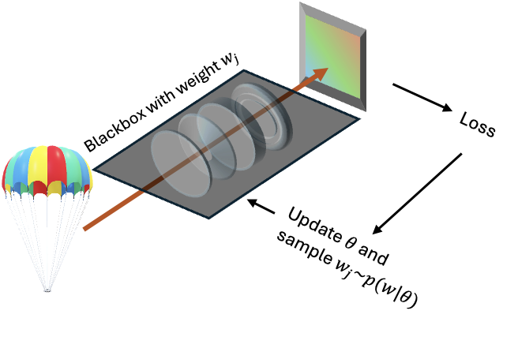
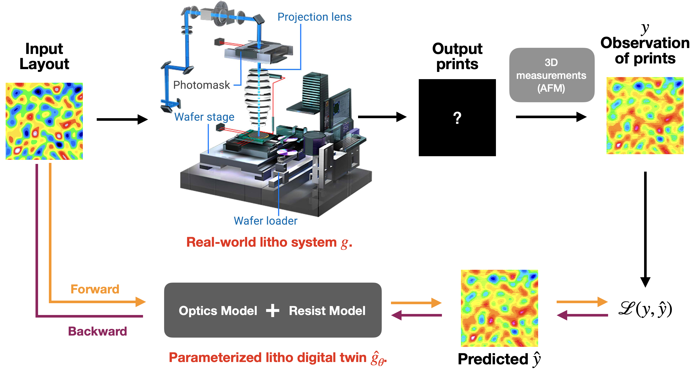
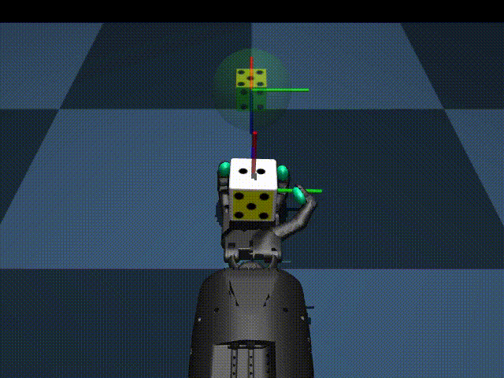

Bio
I am Guangyuan Zhao (赵光远), currently a researcher and a Ph.D. student in CUHK (Hongkong SAR, UTC+08).
Research Interest: My research interest, if I have the freedom to choose, lies at the intersection of perception 📷, robotics 🤖, and learning 🧠. My aim is to create agents that can interactively and informatively sense the world, and learn from the sensed data to better digitalize real-world physical systems and make reliable decisions. In simpler terms, I am interested in robotics, machine learning, computational imaging and optics.
Research Style: My research always strives for making a bigger 'cake' and maximizing information gain of any research sub-areas.
Research Picture: I do have a concrete positioning picture in mind while I am still on the way painting the dots to connect, please stay tuned to it.
I currently work with Prof. Renjie Zhou. Previously, I was part of the
UCLA Visual Machine Group, working with Prof. Achuta Kadambi.
News
July 2024
Our paper "High-performance real-world optical computing trained by in situ model-free optimization" accepted to ICCP&TPAMI 2024 receives the
best paper award in ICCP 2024.
June 2024
I will attend
IISB Lithography Simulation Workshop 2024 and give a invited talk titled "
Neural Litho: Real2Sim redefine the pipeline of computational lithography [slides].
Dec. 2023
I will attend SIGGRAPH Asia 2023 to present our work Neural Litho.
June 2020
I will join Apple AI research team over the summer as an intern and work on "World Models for dextrous manipulation" with Nitish Srivastava and Josh Susskind.
Feb. 2020
My new personal website is established! Please stay tuned to my research.
Research
(†indicates equal contributionship;
✉ indicates corresponding authorship.)

Model-free Computational Optics

Neural Lithography
-
Cheng Zheng†,✉, Guangyuan Zhao†,✉, Peter T. C. So
Neural Lithography: Close the Design to Manufacturing Gap in Computational Optics with a 'Real2Sim' Learned Photolithography Simulator
TL; DR: ① A real2sim pipeline to quantitatively construct a high-fidelity neural photolithography
simulator in photolithography + ② a design-fabrication co-optimization framework to bridge the design-to-manufacturing gap
in computational optics.

Diffusion world models for Dextrous Manipulation
-
Guangyuan zhao, Nitish Srivastava, Walter Talbott, Shuangfei Zhai, Miguel Angel Bautista Martin, Josh Susskind
Apple AI/ML intern 2020
TL;DR: Offline learning the trajectory planning of dextrous manipulation in states space using the diffusion model.
Blending Diverse Physical Priors with Neural Networks
-
Yunhao Ba†, Guangyuan Zhao†, Achuta Kadambi
TL;DR: An one-for-all method being the the top performer of blending physical prior with neural network on a wide range of physical and data conditions.
Nonlinear Focal Modulation Microscopy
-
Guangyuan Zhao†, Cheng Zheng†, Cuifang Kuang, et al.
Nonlinear Focal Modulation Microscopy
Physical Review Letters 2018 (On the cover)
[Paper]
TL;DR: The PSF engineering, in combination with non-linear light-matter interaction, can achieve eqaulivent supre-resolving capacity as STED (the one won the 2014 Nobel prize) while requiring much simpler setup and imposing less constraint on the object to image with.
-
Guangyuang Zhao, et al.
Saturated absorption competition microscopy
3D super-resolved multi-angle TIRF via polarization modulation
-
Cheng Zheng, Guangyuan Zhao et al.
TL;DR: Polarization is a lightweight add-on cue to boost the resolution of any super-resolution imaging techniques.
Resolution enhanced SOFI via structured illumination
-
Guangyuan Zhao, Cheng Zheng, Xu Liu, Cuifang Kuang
TL;DR: The combination of strucutrued illumination and stochastic process of fluorescence emission could further push the resolution boundary of super-resolution imaging.